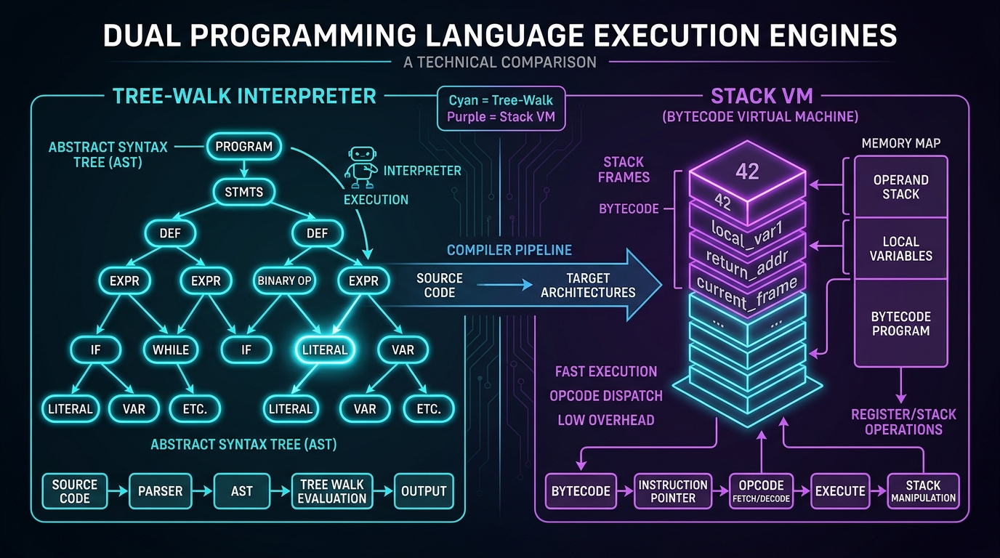
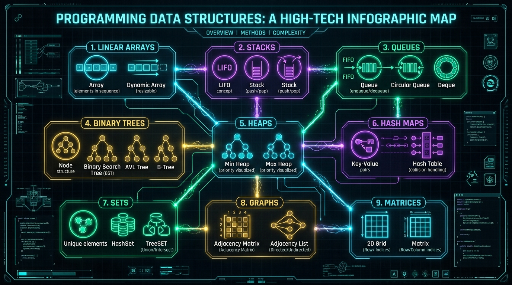
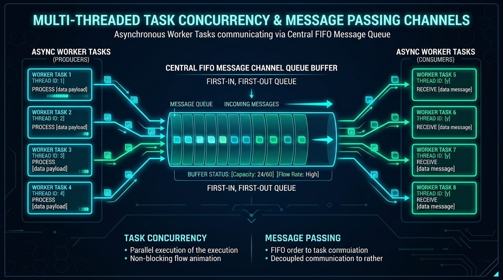

Spid3r
A small, dynamically typed programming language with optional static types. Programs run on a tree-walking reference interpreter or a bytecode compiler + stack VM, and both engines are differentially tested to agree.
Overview
Dual Execution Engines: Tree-Walk Reference Interpreter vs Stack VM
Both engines share an identical frontend (Lexer → Parser → AST → Semantic Checker) and execute with differential equivalence guarantees.

Spid3r uses plain lowercase keywords (fn, let,
class, spawn, import) on top of real semantics: dynamic
types, closures with upvalues, single-inheritance classes with interfaces, structured error
handling, modules with visibility, task-based concurrency, a standard library, and a suite of
20+ built-in data structures. The language core has no third-party
dependencies; the webview GUI and the LLVM native backend are included in the standard
installer.
compile embeds every imported
module, so exec runs a .matrixc with no source on disk.spawn / async /
await, channels, mutexes, and shared cells on a threaded scheduler.
Installation
Spid3r ships prebuilt — there is nothing to compile and no dependencies to install first.
On Windows, run Spid3r-Setup-1.0.0.exe; on Linux and macOS, run the one-line
installer. Both give you the spid3r command-line tool: the tree-walk interpreter,
the bytecode VM, the package manager, the formatter, the REPL, the debugger, and the language
server.
Windows installer
Run Spid3r-Setup-1.0.0.exe. It installs the spid3r toolchain into
%LOCALAPPDATA%\Programs\Spid3r and adds that directory to your user
PATH (terminals started after the install pick it up; already-open ones do not).
The installer always ships the spid3r.exe binary, the standard library
(stdlib/), and — for the native backend — LLVM-C.dll,
LLVM-C.lib, and the spid3r_lang.lib runtime library that
spid3r build links into programs. Optional components:
- Examples, documentation & reference —
README.md,docs/,examples/, and the web/native calculator demos. - WebView2 runtime — installed only when it is missing;
spid3r guiprograms need it (Windows 11 and Microsoft Edge already include it). - C++ Build Tools — downloads the MSVC Build Tools with the Windows SDK (~3 GB, needs administrator rights), which linking a native executable requires; skipped when already installed.
- .matrix file association — double-clicking a
.matrixfile runs it withspid3r run.
Linux / macOS installer
A one-line installer (plain POSIX sh; curl or wget is the
only requirement):
curl -fsSL https://raw.githubusercontent.com/needyamin/spid3r/main/install.sh | shThe script detects your architecture (x86_64 / aarch64), downloads the
matching release tarball from GitHub, installs spid3r into
~/.spid3r/bin, and adds that directory to your PATH in
~/.bashrc, ~/.zshrc, and ~/.profile (it never writes a
line that is already there). Options:
sh install.sh --version 1.0.0 # pin a release instead of latest
sh install.sh --dir ~/.local/bin--dir and the SPID3R_INSTALL_DIR environment variable override the
install location. Afterwards open a new terminal (or source ~/.bashrc) and verify with
spid3r --version.
Backends
The webview GUI backend (spid3r gui) and the LLVM native backend
(spid3r build) are part of the standard toolchain build and are described under
Developer tools. GUI programs need the WebView2 runtime on Windows;
linking a native executable needs the MSVC Build Tools with the Windows SDK. Everything else —
run, check, compile, exec, test,
fmt, debug, repl, lsp, bundle,
and the package manager — works out of the box on both engines.
Quick start
Create hello.matrix:
fn main() {
println("Hello, Spid3r!");
return 0;
}Run it on either engine, or compile it to bytecode and execute that:
spid3r run hello.matrix # tree-walk interpreter (default)
spid3r run --engine vm hello.matrix # bytecode VM, same output
spid3r compile hello.matrix # writes hello.matrixc
spid3r exec hello.matrixc # runs the bytecode; no source neededHello, Spid3r!A slightly bigger taste: closures, collections, and error handling.
fn make_counter() {
let count = 0;
return fn() { // the closure captures `count`
count += 1;
return count;
};
}
fn main() {
let tick = make_counter();
tick();
println(tick()); // 2
let xs = list(1, 2, 3, 4, 5);
println(xs.filter(fn(x) { return x % 2 == 0; })); // [2, 4]
println(xs.reduce(0, fn(acc, x) { return acc + x; })); // 15
try { println(10 / 0); } catch (e) { println("caught: " + e); } // caught: division by zero
return 0;
}spid3r repl to try snippets interactively, and
spid3r check file.matrix to type- and visibility-check without running.
Test Yourself With Exercises
Complete the code below to print "Hello, Spid3r!" to the standard
output:
fn main() {
________("Hello, Spid3r!");
return 0;
}Quick cheat sheet
Everything you need at a glance when writing or reading .matrix code:
let x: int = 10; (mutable)const LIMIT = 100; (immutable)Types:
int, float, bool, string, null,
any.Introspection:
type_of(v), len(v), string(v).
fn add(a: int, b: int) -> int { return a + b; }let dbl = fn(x) { return x * 2; };async fn wait_for(t) { return await t; }Named
fn works at top level and inside blocks.
if c { … } elif d { … } else { … }for x in [1, 2, 3] { … }for let i = 0; i < n; i += 1 { … }while cond { … } · break; · continue;
interface Named { fn name(self) -> string; }class Dog extends Animal implements Named { public let tag: string; fn new(t) { self.tag = t; }} · Instantiate with new Dog("Rex").
try { … } catch (e) { … } finally { … }throw "reason";some(v) / none · ok(v) / err(e).is_ok(), .unwrap(), .unwrap_or(default)
[1, 2] / list(), vec(), vector(n, 0.0),
bytes()map("k", v), set(1, 2), tuple(1, 2), hash_table(),
bag()stack(), queue(), deque(), ring_buffer(n)heap("min"), priority_queue(), bst(), trie(),
graph("directed"), matrix(r, c, 0.0)
let t = spawn fn() { return 42; };t.join() · await t · t.status()let ch = channel(); ch.send(v); ch.recv();let m = mutex(v); m.lock(); m.unlock();
spid3r run app.matrix (or --engine vm)spid3r check app.matrix · spid3r fmtspid3r compile app.matrix → spid3r exec app.matrixcspid3r test · spid3r debug app.matrix · spid3r repl
Program structure
- A source file has the extension
.matrix. It starts with anyimportstatements, followed by declarations (fn,class,interface,let,const) and statements. - A program defines
fn main().spid3r runexecutes the top-level code in order, then callsmain; a file withoutmainis rejected witha program run by `spid3r run` needs fn main(). - If
mainreturns anint, that becomes the process exit code; any other return value exits with0. An uncaught error exits with1. - A file without
mainis a library module. It can be imported, andcheck/compileaccept it.
import "math_util"; // imports come first
const GREETING = "hi"; // top-level declarations
fn main() {
println(GREETING);
return 0; // process exit code
}Syntax basics
- Comments:
// line commentand/* block comment */(block comments do not nest). A UTF-8 BOM at the start of a file is tolerated. - Identifiers are ASCII and case-sensitive: a letter or
_, then letters, digits, or_. - Variables:
let x = 1;declares a mutable binding (the initializer is optional);const LIMIT = 3;declares an immutable one, and assigning to it is a semantic error (cannot assign to const 'LIMIT'). - Statements end in
;, except block forms (if/elif/else,while,for,try, bare blocks) andfn/class/interfacedeclarations.import "name";ends in;. - String escapes:
\n\r\t\\\". Any other escape is a lexer error.
fn helper(x) { … } declarations
work both at the top level and inside any block without needing a trailing semicolon, and support
local recursion. You can also bind anonymous function literals with let f = fn(x) { … };.Reserved keywords
Keywords are lowercase and case-sensitive:
fn let const if elif else while for in break continue return
true false null and or not import try catch finally throw
class interface new self public private spawn async await extends implements
match enumType and constructor names (list, map, heap, …) and
builtin functions are not keywords. They are ordinary globals and can be shadowed. See
docs/KEYWORDS.md.
Test Yourself With Exercises
Insert the correct keyword to declare a mutable variable named
score with value 100:
___ score = 100;Values & types
Primitives: int (64-bit signed), float (64-bit IEEE),
bool, string (immutable UTF-8), and null. Everything else
is a built-in object: collections, option/result, class instances,
functions, tasks, channels, and so on. type_of(x) returns a value's type name and
string(x) converts it to text.
Truthiness
Used by if, while, and/or/not, and
bool():
| Value | Truthy when |
|---|---|
bool |
its own value |
null |
never |
int / float |
non-zero (0 and 0.0 are falsy) |
string |
non-empty |
option |
some(…); none is falsy |
everything else: containers, result (including err(…)), tasks, instances |
always |
int + floatpromotes tofloat;int / inttruncates toward zero (7 / 2is3,-7 / 2is-3).- Integer arithmetic wraps on overflow (i64):
9223372036854775807 + 1is-9223372036854775808. - Division or modulo by zero throws
division by zero. 1 == 1.0istrue. An integer literal outside the i64 range is a lexer error.
Enums and match
An enum is a sum type: a value that is exactly one of its variants, each
carrying its own fields. A match takes it apart, and the compiler checks that
every variant is handled.
enum Shape {
Empty,
Circle(radius),
Rect(w, h),
}
fn area(s) {
return match (s) {
Circle(r) => 3 * r * r,
Rect(w, h) => w * h,
Empty() => 0,
};
}Arms are tried in order. A pattern can be a variant (Circle(r)), a literal
(0, "a"), a binding that captures the whole value (x),
or _. Patterns nest (Dot(At(x, y))), and a if guard
narrows an arm — a failed guard falls through to the next arm rather than failing the
match:
return match (s) {
Circle(r) if (r > 10) => "big",
Circle(r) => "small",
_ => "other",
};A match with no _ or binding arm must cover every variant of the enum it
names; spid3r check reports the missing ones. When the enum cannot be inferred
(literals only), an unmatched value throws a normal runtime error instead.
Value-position if
if also works as an expression, so a conditional value needs no temporary and no
statement dance. Each branch yields its last expression (a branch may omit that final
;); a missing else yields null.
fn grade(n) {
return if (n >= 90) { "A" } else if (n >= 80) { "B" } else { "C" };
}
let label = if (count == 0) { "empty" } else { "{count} items" };return inside a branch returns from the enclosing function, not from the
branch. The value forms are rewritten into a temporary plus ordinary statements before any
engine runs, so all three engines agree by construction — and a statement that uses none of
them is passed through untouched.
Operators & precedence
Arithmetic
+ - * / %
Comparison
== != < <= > >=
Logical
and or not (and/or short-circuit)
Bitwise
& | ^ << >> — int operands only; C precedence
(& tighter than ^ tighter than |, all looser than a
comparison). A shift amount outside 0..=63 is an error.
Unary
-x · not x · await x · spawn fn(){…}
Casts
x as int · x as float · x as string · x as bool — binds tighter than
* and may chain; exactly the conversion builtins
int()/float()/string()/bool().
Assignment (right-associative)
= += -= *= /= %=
Null handling
?? (fallback when null — the right side is evaluated only when the left is
null) · obj?.field (null when the receiver is null)
Members & indexing
obj.field · obj.method() · xs[i] · xs[i] = v ·
m[k] = v
Construction
new Class(…) · [a, b] · (a, b, c) tuple literal ·
list(…) · fn(x){…}
Not available
No !, ++, ~, or **. Use not,
x += 1, and pow(b, e). ^ is bitwise xor, not
exponentiation.
Precedence, tightest first: postfix (call, index, field, method) → unary
not / - / await / spawn → as
casts → * / % →
+ - → << >> → comparisons → & →
^ → | → and → or → ?? →
assignment. Comparison chains
are left-associative (a < b < c parses as (a < b) < c), so write
a < b and b < c instead.
fn main() {
println(10 + 0.5); // 10.5 int + float -> float
println(7 / 2); // 3 int / int truncates
println(7.0 / 2); // 3.5 a float operand -> float
println(7 % 3); // 1
println(2 * (3 + 4)); // 14
println(true and false); // false
println(not true); // false
println(1 < 2 or 9 < 3); // true
let a = 5;
a += 3;
println(a); // 8
return 0;
}Control flow
if / elif / else (else if is the same as
elif), while, two forms of
for (collection iteration and a C-style header), plus break and
continue in every loop form. else always binds to the nearest unfinished
if.
fn main() {
for x in [1, 2, 3] { println(x); } // 1 2 3
for (k, v) in scores { println("{k}={v}"); } // map entries
for let k = 0; k < 3; k = k + 1 { println(k); } // 0 1 2
let i = 0;
while i < 2 { println(i); i += 1; } // 0 1
let n = 2;
if n == 2 { println("two"); }
elif n == 1 { println("one"); }
else { println("other"); } // two
return 0;
}for (k, v) in m walks a map's entries — k is the key and
v its value. The one-variable form keeps its meaning (a map yields keys, a list
yields elements), so the two forms are unambiguous.
Destructuring bindings
let can bind several elements of a list or tuple at once; the right-hand side is
evaluated exactly once.
fn min_max(xs) {
return [xs[0], xs[xs.len() - 1]];
}
let (lo, hi) = min_max([3, 1, 4]);
println("{lo}..{hi}"); // 3..4What for … in iterates
| Collection | Yields |
|---|---|
list, vec, vector, tuple,
deque,
queue, linked lists
|
elements, front to back |
bytes |
integer bytes (0..255) |
stack |
elements, top first |
ring_buffer |
current elements, oldest first |
set · bag |
members in insertion order (a bag yields each occurrence) |
map |
values, in insertion order (use keys() / items() for keys)
|
graph |
nodes |
bst |
values in sorted (in-order) order |
heap, binary_tree, trie |
stored values / words (internal order) |
hash_table |
keys, in bucket order (not insertion order) |
string |
one-character strings |
matrix and priority_queue are not iterable; use
row()/col() or repeated pop().
Test Yourself With Exercises
Insert the missing keyword to check an alternative condition in an
if chain:
if (score >= 90) {
println("Grade A");
} ____ (score >= 80) {
println("Grade B");
} else {
println("Study More");
}Functions & closures
Functions are first-class values. Anonymous fn(x) { … } literals nest and
capture their surrounding bindings, and recursion is supported. async fn marks a
function that may await; using await elsewhere is a semantic error.
Trailing parameters may declare constant defaults
(fn greet(name, greeting = "Hello")) — omitted trailing arguments are filled from
them (functions, methods, and constructors alike); once one parameter has a default, every
parameter after it must have one, and defaults must be literal numbers, strings, booleans, or
null. Calls may also pass arguments by name
(greet(greeting: "Hi", name: "ada")) on direct function calls, constructors, and
super; positional arguments must come first, and parameters the call omits fall
back to their defaults.
fn make_adder(base) {
return fn(x) { return x + base; }; // captures `base`
}
fn fact(n) {
if n <= 1 { return 1; }
return n * fact(n - 1);
}
fn main() {
let add100 = make_adder(100);
println(add100(5)); // 105
println(fact(5)); // 120
let g = fact; // functions are values
println(g(4)); // 24
return 0;
}Capture rules
These rules are identical on both engines and pinned by regression tests:
- Closures capture bindings, not values. A write through one closure is visible to every other closure over the same binding.
for x in …creates a fresh binding per iteration. Closures made in iteration N see that iteration's value.whileand C-styleforshare one binding. Closures created there observe the variable's final value; bind a freshletinside the body if you need a snapshot.- Every activation is isolated. Recursive functions and factories such as
make_addernever leak state between calls.
fn main() {
let fs = list();
for x in [0, 1, 2] { fs.push(fn() { return x; }); }
println(fs.map(fn(f) { return f(); })); // [0, 1, 2]
let gs = list();
let i = 0;
while i < 3 { gs.push(fn() { return i; }); i += 1; }
println(gs.map(fn(f) { return f(); })); // [3, 3, 3]
return 0;
}Test Yourself With Exercises
Fill in the keyword to declare a function named multiply:
__ multiply(a, b) {
return a * b;
}Classes & interfaces
Class Inheritance & Interface Contract Hierarchy
Single class inheritance with multi-interface compliance, virtual method dispatch tables, and explicit
self receiver.
- Single inheritance with
extends; methods resolve through the parent chain, so overrides dispatch polymorphically. - Visibility: members are
privateby default; mark thempublicto expose them. The semantic checker rejects out-of-class access to private members (field 'x' of class 'A' is private). - Receiver:
selfis an explicit parameter of every method. - Constructor: the method named
new, invoked asnew Class(…). The shorthand membernew(params) { … }is also accepted.
class Animal {
public let name;
private let noise;
fn new(name, noise) { self.name = name; self.noise = noise; }
public fn speak(self) -> string { return self.name + " says " + self.noise; }
}
class Dog extends Animal {
fn new(name) { self.name = name; self.noise = "woof"; }
public fn fetch(self) -> string { return self.name + " fetches"; }
}
fn main() {
let d = new Dog("Rex");
println(d.speak()); // Rex says woof (inherited from Animal)
println(d.fetch()); // Rex fetches
// println(d.noise); // semantic error: private member
return 0;
}Interfaces declare method signatures (each ending in ;), and classes opt in with
implements A, B. Dispatch is by method name, so a variable may hold any implementation.
interface Named {
fn name(self) -> string;
}
class Team implements Named {
public let label;
fn new(label) { self.label = label; }
public fn name(self) -> string { return "team-" + self.label; }
}
fn main() {
println(new Team("core").name()); // team-core
return 0;
}Printing an instance shows its class and field map, e.g.
Dog {name: Rex, noise: woof}. Field order in that output is not guaranteed.
Test Yourself With Exercises
Complete the syntax to make class Circle inherit from class
Shape:
class Circle _______ Shape {
public let radius;
}Error handling
Errors are values. throw raises any value, and try /
catch (e) / finally handles it. At least one of catch or
finally is required. An uncaught error prints its message, source position, and a
call-stack trace, then exits with code 1:
error[runtime]: uncaught throw (thrown: bad)
--> app.matrix:1:13
|
1 | throw "bad";
| ^^^^^^^^^^^
stack trace (most recent call first):
at boom (app.matrix:1:13)
at main (app.matrix:3:5)Every diagnostic shows the offending line with a caret under the span, then any
= note: / = help: lines. A type mismatch, for example, suggests the
fix:
error[semantic]: type mismatch in 'xs': expected list<int>, got list<string>
--> app.matrix:2:25
|
2 | let xs: list<int> = ["a"];
| ^^^^^
= help: annotations are checked before the program runs; use `any` to opt out,
or convert explicitly with string(x) / int(x) / float(x)spid3r check --json file.matrix prints the same diagnostic as one JSON object
(phase, message, file, line,
col, len, help, notes,
trace) for editors and CI.
Lint warnings
spid3r check also reports things that are suspicious rather than wrong. Warnings
never change the exit code unless you ask them to:
| Lint | Reports |
|---|---|
unused-variable |
A local that is never read. |
unused-parameter |
A parameter that is never read. Name it _req when a callback must match a
signature it does not use. |
unused-import |
An import whose names are never used. |
unreachable-code |
A statement after return, throw, break, or
continue.
|
warning[semantic]: unused parameter 'req'
--> app.matrix:13:16
|
13 | app.use(fn(req) {
| ^^^--deny-warnings makes any warning fail the build (exit 1), and
--allow unused-parameter silences one lint without hiding the rest. In
--json mode each warning carries "severity":"warning" and its
"lint" name.
Option and result
Two sum types model expected failure without throwing:
| Type | Constructors | Methods |
|---|---|---|
option |
some(v), none |
is_some, is_none, unwrap (throws on none),
unwrap_or(d), map(f), and_then(f),
ok_or(e), unwrap_or_else(f), flatten
|
result |
ok(v), err(e) |
is_ok, is_err, unwrap (throws on err),
unwrap_or(d), unwrap_err, map(f),
map_err(f), and_then(f), unwrap_or_else(f),
flatten
|
An option or result can be annotated — let x: option<int> =
some(5) — and collection annotations check their element type, so
let xs: list<int> = ["a"] is rejected.
The ? operator
expr? returns the failure from the enclosing function and yields the payload
otherwise. It works on both option and result, so a chain of
fallible calls needs no nesting:
fn half(n) {
if (n % 2 != 0) { return err("odd"); }
return ok(n / 2);
}
fn quarter(n) {
let h = half(n)?; // returns err("odd") to the caller
return ok(h / 2);
}
quarter(8); // ok(2)
quarter(3); // err(odd)On an option it propagates none. It is implemented as
if (is_failure(v)) { return v; } v.unwrap(), and is_failure is a normal
builtin, so the same check is available directly.
fn parse_age(s) {
let n = int(s);
if n < 0 { return err("age cannot be negative"); }
return ok(n);
}
fn main() {
try { println(10 / 0); }
catch (e) { println("caught: " + e); } // caught: division by zero
finally { println("done"); } // done
let r = parse_age("42");
if r.is_ok() { println("ok: " + string(r.unwrap())); } // ok: 42
println(parse_age("-1").unwrap_err()); // age cannot be negative
println(parse_age("-1").unwrap_or(0)); // 0
let none_val = none;
try { none_val.unwrap(); }
catch (e) { println("caught: " + e); } // caught: unwrap on none
return 0;
}read_file,
write_file, spawn_process) return result values instead of
throwing, so branch with is_ok/is_err. Argument and type errors (e.g.
write_file(1, "x")) still throw.
finally always runsOn both the
tree-walk interpreter and the bytecode VM, finally blocks execute deterministically on
normal completion, on thrown errors, and on early exits (return, break,
and continue) out of a try or catch block.Strings
Strings are immutable UTF-8. Lengths and indexes count characters, not bytes. Indexing
s[i] returns a one-character string. Negative indices count from the end —
s[-1] is the last character, and xs[-1] the last element of a list —
on lists, tuples and strings. + concatenates two strings only;
convert other values with string(x) or use format
("a" + 1 throws cannot add string and int).
Interpolation. A literal may contain {name} or
{obj.field} holes — no whitespace inside the braces. Each hole is converted with
string(...), so no explicit conversion is needed:
let name = "ada";
let n = 36;
println("hi {name}, {n} years"); // hi ada, 36 yearsAnything else starting with { is literal text, so "{{ user }}",
"{ x }", "{}" and "{0}" stay exactly as written — the
stdlib template engine relies on that. A hole is recognised only when { is
followed immediately by an identifier.
| Group | Methods |
|---|---|
| Size | len, is_empty |
| Slicing | slice(a[, b]) (bounds-checked), chars (list of one-char strings),
reverse
|
| Case & trim | upper, lower, trim, ltrim,
rtrim
|
| Search | contains, starts_with, ends_with,
index_of(sub) (-1 when absent)
|
| Build | split(sep), replace(from, to), repeat(n),
pad_left(width, pad), pad_right(width, pad); join(sep) is a list
method
|
| Format | format(args…) fills {} placeholders left to right;
a placeholder may instead carry a precision — "{:.2}" renders its number with
exactly 2 fractional digits, for N from 0 to 15 (an int is widened so it gets a
fixed point). Rounding is tie-to-even, so "{:.0}".format(2.5) is "2"
— unlike round(2.5), which rounds halves away from zero. A bad spec
({:.16}, {:.}, {:x}) or a non-number argument is a
catchable error;
{{ and }} escape braces
|
fn main() {
println("a={} b={}".format(1, "two")); // a=1 b=two
println("{{literal}} {}".format(5)); // {literal} 5
println(" pad ".trim().pad_left(8, ".")); // .....pad
println("k=v".split("=").join("|")); // k|v
println("héllo".len()); // 5 (characters)
println("héllo"[1]); // é
println("hello".slice(1, 3)); // el
println("abc".reverse()); // cba
println("{:.2}".format(88.6875)); // 88.69
return 0;
}Data structures
Spid3r Built-in Data Structures: Comprehensive Map
Spid3r ships with 20+ zero-dependency containers implemented natively for optimal runtime performance and clear semantics.

Every container is created by calling a global constructor. Most share a common verb set:
len, is_empty, clear, contains, and
clone. Misuse, such as pop on an empty stack, an
out-of-range index, a missing map key, or a duplicate bst key, throws a descriptive,
catchable error. Full details are in docs/DATA_STRUCTURES.md.
Sequences
| Constructor | Methods & notes |
|---|---|
list(a, …) · [a, …] |
Ordered and growable. xs[i], xs[i] = v, get,
set, push, pop, peek, insert(i, v),
remove(v) (first match), remove_at(i), index_of, sort,
sorted, reverse, reversed, slice,
join(sep) (strings only), append(other), plus the higher-order methods below.
|
vec(a, …) |
Same API as list, plus capacity(). type_of reports
vec.
|
tuple(a, …) |
Fixed and immutable: t[i], get, contains.
push/pop/set/insert throw.
|
deque() |
push_back/push, push_front,
pop_back/pop, pop_front, peek_back/peek,
peek_front, to_list.
|
ring_buffer(capacity) |
Fixed capacity; push overwrites the oldest item when full. pop
and peek work on the oldest item; also capacity, is_full. |
linked_list() · singly_linked_list() ·
doubly_linked_list()
|
Node-based: push_back, push_front, pop_back,
pop_front, peek_front, peek_back, get(i),
remove(v), to_list.
|
Stacks, queues & heaps
| Constructor | Methods & notes |
|---|---|
stack(a, …) |
LIFO: push, pop, peek, to_list. |
queue() |
FIFO: push (enqueue), pop (dequeue), peek,
to_list.
|
heap("min" | "max") |
push(v), pop, peek, is_min. |
priority_queue(["min" | "max"]) |
push(value, priority), pop, peek. Defaults to
"min" (lowest priority first); ties keep arrival order.
|
Associative
| Constructor | Methods & notes |
|---|---|
map(k, v, …) |
Insertion-ordered. m[k], m[k] = v, get,
set, remove, delete, has, contains,
keys, values, items. Keys may be null,
bool, int, or string (floats are rejected); a missing key throws.
|
set(a, …) |
Unique members, insertion-ordered: add/push, remove,
union, intersection/intersect, difference,
to_list.
|
bag() |
Multiset: add/push, remove,
count_of(v); len counts every occurrence.
|
hash_table() |
h[k], h[k] = v, get, set,
remove, keys, bucket_count, load_factor.
|
Trees, graphs & grids
| Constructor | Methods & notes |
|---|---|
binary_tree() |
insert (level order), inorder, preorder,
postorder, level_order, root (an option).
|
bst() |
Binary search tree: insert (duplicates throw), remove,
contains, inorder, preorder, postorder,
root (an option).
|
trie() |
Prefix tree of strings: insert, contains,
starts_with(prefix), with_prefix(prefix), all_words.
|
graph("directed" | "undirected") |
add_node, has_node, add_edge(a, b[, weight]) (both
nodes must exist), neighbors, path_exists, find_path (an
option of a node list), bfs(start), dfs(start), nodes,
edge_count, is_directed.
|
matrix(rows, cols[, fill]) |
2-D grid of floats: get(r, c), set(r, c, v), row(r),
col(c), rows, cols, add, mul.
m[i] reads or assigns cell i in row-major order; len(m) is
rows * cols.
|
Shared state
ref(v), mutex(v), and channel() are covered under
Concurrency.
Higher-order list methods
Lists (and vecs) accept Spid3r functions as callbacks. The list is snapshotted first, so a callback that mutates the list cannot corrupt the iteration.
| Method | Meaning | On an empty list |
|---|---|---|
xs.map(f) |
new list of f(x) |
empty list |
xs.filter(f) |
new list of each x where f(x) is truthy |
empty list |
xs.reduce(init, f) |
left fold with f(acc, x) |
init |
xs.for_each(f) |
call f(x) for side effects |
no-op |
xs.all(f) / xs.any(f) |
every / some result truthy | true / false |
xs.sort_by(cmp) |
sort in place with a comparator; returns null |
no-op |
xs.sorted_by(cmp) |
new sorted list; xs is left alone |
empty list |
xs.argsort() |
original indices in ascending order — argsort()[i] is where the element that belongs at
i came from
|
empty list |
A comparator cmp(a, b) may answer a bool (true = a
comes first) or a number (negative / zero / positive). Sorts are
stable: equal elements keep their input order. Because a boolean
false cannot tell "after" from "equal", the mirrored question
cmp(b, a) is asked whenever cmp(a, b) is false, which is what
recovers equality — so a comparator may run more than once per pair and should stay
side-effect free. The list is snapshotted and no lock is held while a comparator runs:
a comparator that throws, mutates the receiver, or walks a self-referential list gets
a clean error or a deterministic result, never a deadlock or a host panic. A throw
propagates the thrown value and leaves the list as it was.
fn main() {
let xs = list(30, 10, 20);
xs.sort_by(fn(a, b) { return a > b; }); // descending, in place
println(xs); // [30, 20, 10]
println(list(30, 10, 20).argsort()); // [1, 2, 0]
println("{:.2}".format(88.6875)); // 88.69
}fn main() {
let xs = list(10, 20, 30);
xs.push(40);
xs.remove_at(1);
println(xs); // [10, 30, 40]
println(xs.map(fn(x) { return x * 2; })); // [20, 60, 80]
println(xs.reduce(0, fn(acc, x) { return acc + x; })); // 80
let m = map("a", 1, "b", 2);
m["c"] = 3;
println(m.items()); // [(a, 1), (b, 2), (c, 3)]
let pq = priority_queue();
pq.push("low", 5);
pq.push("urgent", 0);
println(pq.pop()); // urgent
let g = graph("undirected");
g.add_node("a"); g.add_node("b"); g.add_node("c");
g.add_edge("a", "b");
g.add_edge("b", "c", 2.5);
println(g.find_path("a", "c").unwrap()); // [a, b, c]
let mx = matrix(2, 2, 1.0);
mx.set(0, 1, 5);
println(mx.row(0)); // [1.0, 5.0]
return 0;
}Test Yourself With Exercises
Create an empty stack container in Spid3r:
let s = _______;
s.push(42);Modules
import "name"; loads name.matrix. Only members marked
public are exported, and the semantic checker enforces privacy. Imports must appear
before any other declaration (import must appear before other declarations).
// math_util.matrix: a library module (no fn main)
public fn square(x) { return x * x; }
public const LIMIT = 3;
fn secret() { return 42; } // private: not exported
// modules.matrix: the program
import "math_util";
fn main() {
println(square(5)); // 25
println(LIMIT); // 3 (still const: assigning to it is a semantic error)
return 0; // calling secret() here fails: unknown name 'secret'
}Resolution order
- The directory of the importing file.
- Each directory listed in
SPID3R_PATH. ./stdlib(relative to the working directory).- The nearest
vendor/directory at or above the working directory (populated byspid3r install).
- One instance per file. Modules are keyed by their canonical path, so
"lib/util"and"./lib/util"share one instance and its top-level code runs exactly once. - Cycles are detected with a diagnostic that prints the full chain, e.g.
circular import of 'a' (chain: a.matrix -> b.matrix -> a). They never hang. - A missing module is a semantic error with a source position.
spid3r compile resolves,
checks, and embeds every imported module (transitively) into the .matrixc file, keyed
by resolved path. spid3r exec therefore needs no .matrix sources on disk.Concurrency
Task Concurrency & FIFO Channel Message Passing
Lightweight asynchronous worker tasks communicate cleanly over buffered or unbuffered channels on a work-stealing thread-pool scheduler.

spawn fn() { … }; runs a function literal as a task on a threaded scheduler and
returns a task. await joins a task or receives one message from a
channel, and is only legal inside an async fn.
Tasks
| Member | Behavior |
|---|---|
await t (in async fn) |
Join the task and return its value; a failed task re-raises its error to the awaiter. |
t.join() |
Block until finished and return the value, or re-raise the failure. A thrown value crosses the
boundary as the value, so catch rebinds the original map/object rather than a
string. Repeatable: joining twice returns the same value. |
t.status() |
"running", "done", or "failed". Never blocks. |
t.is_done() |
Non-blocking completion check. |
A task that throws does not crash the program. The error is stored,
status() becomes "failed", and the error is re-raised on
join/await, so the joining side can try/catch it.
Shared state
| Constructor | Methods & semantics |
|---|---|
channel() |
Unbounded FIFO queue. send(v) never blocks; recv() blocks until a
message arrives; try_recv() returns an option; also len,
is_empty. await ch receives one message.
|
mutex(v) |
lock() blocks until the mutex is free, then returns the inner value
(collections are aliased, so mutations stick). Release it explicitly with unlock(). |
ref(v) |
A shared mutable cell: get(), set(v). |
async fn settle(t) { return await t; }
fn main() {
let ch = channel();
spawn fn() { ch.send(1); ch.send(2); };
println(ch.recv()); // 1
println(ch.recv()); // 2
let t = spawn fn() { return 7; };
println(settle(t)); // 7
let bad = spawn fn() { throw "task-error"; };
sleep_ms(30);
println(bad.status()); // failed
try { bad.join(); } catch (e) { println("caught " + e); } // caught task-error
let shared = mutex(list());
let items = shared.lock();
items.push(1);
shared.unlock();
return 0;
}Related builtins: task_count(), sleep_ms(n),
yield(), and spawn_process(cmd, args) (synchronous; see the
standard library).
Scheduler & resource limits
Tasks run on a process-wide pool that starts at the machine's CPU count and grows on demand, so a task
parked in recv, join, mutex.lock, or sleep_ms never
starves work that is waiting behind it.
| Aspect | Behavior |
|---|---|
| Workers | One worker per outstanding task, up to SPID3R_MAX_WORKERS (default
256); extra workers retire after 10 s idle. At the ceiling a stall is reported on
stderr with the variable to raise instead of hanging silently.
|
| Ready queue | Bounded by SPID3R_QUEUE_CAP (default 65536 jobs).
spawn grows the pool first and then blocks the producer until a worker takes a job, so a
spawn storm cannot exhaust memory and no task is dropped.
|
| Program exit | Waits up to SPID3R_TASK_DRAIN_MS (default 2000 ms) for tasks
main left running — their output is not lost — then reports what is still running and
exits 0. The worker threads are then joined, not killed mid-write.
|
gc_collect() |
Runs only when no other thread is executing Spid3r code; tasks parked in a blocking wait hold their values on their own stacks and do not block a collection. While another thread is genuinely running it fails with a clean, catchable error. |
Test Yourself With Exercises
Insert the keyword to run a task concurrently in the background:
let t = _____ fn() {
return 42;
};Gradual typing
Annotations are optional everywhere, and unannotated code stays fully dynamic. When present,
they are checked by spid3r check and before every run.
fn add(a: int, b: int) -> int {
return a + b;
}
let count: int = 0;
let name: string = "spid3r";
class Point {
public let x: float;
public let y: float;
fn new(x: float, y: float) { self.x = x; self.y = y; }
}
fn main() {
let p = new Point(1, 2.5); // int widens to float
let anything: any = "text"; // any opts out
anything = 3;
println(add(count, 2)); // 2
return 0;
}- Checked positions:
let/constbindings, parameters, return types, and class fields. intwidens tofloat;anyopts a binding out of checking.- Mismatched assignments, call arguments, returns, and field writes are rejected before any code runs, with positions:
error[semantic]: argument 2 of 'add' expects int, got string
--> app.matrix:3:20Standard library
Global functions available in every program. They are ordinary globals (not keywords), so a user declaration with the same name shadows the builtin.
Console & input
| Function | Returns | Notes |
|---|---|---|
print(x, …) |
null | Writes the display form of each argument, space-separated, without a trailing newline. |
println(x, …) |
null | Same, followed by a newline. |
eprint(x, …) |
null | Writes to stderr, no trailing newline. |
read_line() |
string / null | One line from stdin with the line ending stripped; null at EOF. |
Files, environment & processes
| Function | Returns | Notes |
|---|---|---|
read_file(path) |
result |
ok(text) / err(msg). |
write_file(path, text) |
result |
ok(null) / err(msg). |
file_exists(path) |
bool | True for files and directories. |
env(name) |
option |
some(value) / none. |
args() |
list of strings | Arguments after the script path on the spid3r run command line (empty for
exec, test, …).
|
spawn_process(cmd, args) |
result |
Runs to completion; ok(exit_code) / err(msg). Arguments are passed directly;
there is no shell and no injection surface. |
exec_capture(cmd, args, stdin) |
result |
Spawns command, writes optional stdin text, captures stdout/stderr; returns
ok(map("code", code, "stdout", out, "stderr", err)).
|
read_bytes(path) · write_bytes(path, b) |
result |
Binary file read/write for raw bytes buffers. |
load_npy(path) · save_npy(path, v) |
result |
NumPy .npy v1.0 serialization and deserialization for vector and
matrix.
|
parse_csv(t[, opts]) · read_csv(p) · write_csv(p, h, r) |
result |
RFC-4180 CSV parser with automatic type inference, header handling, and safe quoted formatting. |
Time & scheduling
| Function | Returns | Notes |
|---|---|---|
now() |
int | Monotonic milliseconds since the process's first now() call. Meant for timing, not
wall-clock time. |
sleep_ms(n) |
null | Sleeps and yields the task. |
yield() |
null | Cooperatively yields to the scheduler. |
task_count() |
int | Number of live scheduler tasks. |
Math, conversion & introspection
| Function | Returns | Notes |
|---|---|---|
abs(x) · sqrt(x) · pow(b, e) |
number | sqrt and pow return floats; sqrt of a negative is
NaN.
|
floor(x) · ceil(x) · round(x) · trunc(x) ·
sign(x)
|
float | IEEE 754 rounding operations and signum extraction. |
clamp(x, lo, hi) |
number | Clamps x to [lo, hi]; throws if lo > hi. |
exp(x) · ln(x) · log10(x) · log2(x) ·
hypot(x, y)
|
float | Exponential, natural/base-10/base-2 logarithms, and hypotenuse without overflow. |
sin(x) · cos(x) · tan(x) · asin(x) ·
acos(x) · atan(x) · atan2(y, x)
|
float | Trigonometric and inverse trigonometric functions in radians. |
is_nan(x) · is_inf(x) · nan() · inf() |
bool / float | Float predicates and IEEE 754 special constants. |
float_or(text, default) |
float | Parses float string safely, returning default on parse failure. |
min(a, b, …) · max(a, b, …) |
number | Two or more numbers; mixed int/float compare numerically; ties keep the first argument. |
random_int(lo, hi) · random_float() · random_normal() |
int / float | Entropy-seeded uniform integers, uniform [0.0, 1.0) floats, and standard normal (Box-Muller) samples. |
int(x) · float(x) · string(x) · bool(x)
|
converted | int trims and parses strings (garbage throws) and truncates floats toward zero;
bool uses the truthiness rules.
|
len(x) |
int | Collections and strings; throws for numbers and null. |
type_of(x) |
string | int, float, string, list, vec,
vector, bytes, matrix, map, option,
result, …
|
Crypto, Regex & DateTime
| Function | Returns | Notes |
|---|---|---|
sha256(str) · hmac_sha256(key, msg) ·
pbkdf2_sha256(password, salt, iterations)
|
string | FIPS 180-4 SHA-256, RFC 2104 HMAC-SHA256, and RFC 8018 PBKDF2-HMAC-SHA256 (32-byte key, hex) — the password-storage primitive. Zero dependencies. |
base64_encode(data) · base64_decode(text) ·
base64_url_encode(data) · base64_url_decode(text)
|
string / bytes | RFC 4648 Base64 — standard (+/, padded) and URL-safe (-_, unpadded) alphabets. Encode accepts strings or bytes; decode returns bytes. |
regex_match(pat, text) · regex_find(pat, text) |
bool / option | Thompson NFA regex engine. Linear-time execution with full protection against catastrophic backtracking. |
regex_find_all(pat, text) · regex_replace(pat, text, repl) |
list / string | Returns list of matched strings or replaces all occurrences. |
unix_time() · unix_ms() |
int | Current Unix epoch timestamp in seconds or milliseconds. |
datetime_parts(sec) · datetime_from_parts(y, m, d, h, min, s) |
map / int | Howard Hinnant civil calendar algorithm; accurately handles negative timestamps and leap years. |
format_datetime(sec, fmt) |
string | Strftime-style formatting (%Y, %m, %d, %H,
%M, %S, %w, %F, %T, %%).
|
JSON, testing & memory
| Function | Returns | Notes |
|---|---|---|
json_parse(text) |
value | Objects become map, arrays become list. Supports \uXXXX escapes
and surrogate pairs. Nesting is capped at 512 levels (clean error, no stack overflow). |
json_write(v) |
string | Compact JSON that round-trips through json_parse. Non-finite floats are an error; depth is
capped at 512, so a self-referential container errors instead of hanging. |
assert(cond[, msg]) |
null | Throws assertion failed[: msg] when cond is falsy. |
assert_eq(a, b[, msg]) |
null | Throws assertion failed: a != b, showing both sides. |
gc_collect() · gc_live_cells() |
int | Force a cycle-collection pass (refused with a clean error while another thread is running Spid3r code); count live tracked cells (see Memory model). |
weak(v) · deref(w) |
weak / value | Non-owning reference; deref returns null once the target is freed. |
Display format
print/println render values in their display form:
| Value | Displays as |
|---|---|
list(1, 2) · string(list(1, 2)) |
[1, 2] |
tuple(1, 2) |
(1, 2) |
map("a", 1) |
map{a: 1} |
set(1, 2) |
set{1, 2} |
some(5) · ok(1) |
some(5) · ok(1) |
2.0 * 2 |
4.0 (floats keep a decimal point) |
SQLite database
db_open(path) opens (or creates) a real SQLite database by loading the SQLite C
library at runtime — no external packages, nothing downloaded at install time. The loader looks for
sqlite3.dll / libsqlite3.so / libsqlite3.dylib in the
SPID3R_SQLITE_PATH environment variable, next to the running executable, then the
system search paths. Connections default to WAL journaling and foreign_keys=ON.
Statements are parameterized (? placeholders — injection-safe); column types map
TEXT→string, INTEGER→int, REAL→float, BLOB→bytes, NULL→null:
fn main() {
let db = db_open("app.db");
// DDL (multi-statement)
db.exec("CREATE TABLE IF NOT EXISTS users (
id INTEGER PRIMARY KEY, name TEXT, score REAL)");
// INSERT with parameters -> {changes, last_id}
let r = db.run("INSERT INTO users(name, score) VALUES (?, ?)", ["ada", 9.5]);
println(r["last_id"]); // 1
// SELECT -> a list of row maps
let rows = db.query("SELECT id, name FROM users WHERE score > ?", [9.0]);
for row in rows {
println(row["name"]);
}
db.close();
}Errors (bad SQL, constraint violations) are catchable strings carrying the SQLite message;
using a closed handle raises database is closed. Not available on WebAssembly. See
First-Party Standard Libraries for the web framework that
pairs with it.
Networking & HTTP
Built-in TCP socket primitives and HTTP/1.1 framing with zero external dependencies (see Networking & HTTP guide below):
| Function | Returns | Notes |
|---|---|---|
tcp_listen(addr) |
result |
Bind a TCP listener; ok(listener_id) / err(msg). Pass
"127.0.0.1:0" for an OS-assigned free port.
|
tcp_accept(id) |
result |
Blocks until a client connects; returns ok(conn_id). |
tcp_connect(addr) |
result |
Connect to a remote TCP endpoint; returns ok(conn_id). |
tcp_read(conn, max) · tcp_write(conn, text) |
result |
tcp_read returns ok(text) (empty string on peer close);
tcp_write returns ok(bytes_sent).
|
tcp_close(handle) |
bool | Closes connection or listener; wakes blocked acceptors. |
tcp_local_addr(h) · tcp_peer_addr(conn) |
result |
ok("ip:port") of bound local port or remote peer address. |
udp_bind(addr) · udp_local_addr(h) ·
udp_send_to(h, addr, text) · udp_recv_from(h, max) ·
udp_close(h)
|
result |
UDP datagram sockets over the same handle table as TCP. Bind port 0 for an
ephemeral port; udp_recv_from returns
ok([text, "sender-ip:port"]) and blocks until a datagram arrives.
|
http_read_request(conn) |
result |
Parses HTTP/1.1 request into a map: method, path, query
(map), headers (map), body. |
http_write_response(conn, status, headers, body) |
result |
Sends HTTP/1.1 response with automatic Content-Length and connection: close. |
http_fetch(method, url[, headers, body]) |
result |
HTTP client request returning a map with status (int), headers (map), and
body (string). https:// is supported with the tls feature
(--features tls; uses the OS certificate store) — without it an
err result names the rebuild.
|
url_decode(s) · url_encode(s) |
string | RFC 3986 URL percent-encoding and decoding (form rules: + is space). |
First-Party Standard Libraries (./stdlib/)
Spid3r ships with 23 zero-dependency first-party standard libraries in
./stdlib/ (automatically searched by the module loader, and compiled into the WebAssembly
build so import works in a browser). Every module runs with 100% feature parity across the
tree-walking interpreter and the bytecode VM.
| module | what it gives you |
|---|---|
web, http | Express-style routing, middleware, cookies, JWT, templates, static files, an HTTP server/client |
smtp, ftp, ssh | ESMTP client + RFC 5322/MIME message builder, FTP client (EPSV/PASV, MLSD, byte-exact transfers), and SSH/SFTP via the system OpenSSH client with a validated argv |
tz, unicode | IANA time zones (tzdata 2026e, 343 zones, 1900–2100) with DST-correct day bounds; UAX #15 normalization, case folding and three-strength comparison (UCD 15.1) |
dataframe | frames from records/CSV, select/filter/sort/group_by/join, describe |
stats | descriptive statistics, correlation, t-test/chi-square, and the distribution family (normal_quantile, binomial, Poisson, exponential) |
ml | linear/logistic regression, kNN, k-means, PCA, metrics |
mathx | ANOVA, Mann-Whitney, Kolmogorov-Smirnov, interpolation, smoothing, convolution, CSR sparse matrices, random draws |
toml, xml, yaml | parsers and writers for each format |
semver, uuid | version parsing/comparison/constraints, UUID v4 |
bigint, decimal, rational, complex | exact arithmetic: arbitrary precision, fixed-point, fractions, complex |
event, gen, assert | readiness event loop, generators, assertion helpers |
.zip, SHA-256/HMAC, PBKDF2, scrypt, bcrypt,
Argon2, MessagePack/CBOR/protobuf, PNG, WAV, FFT) is compiled Rust with no crates beyond the standard
library.
1. stdlib/web.matrix — Express / PHP Alternative
Production-ready web framework with router, URL parameter extraction, query/form parsing, cookie handling, HTML template rendering with XSS escaping, and HMAC-SHA256 JWT tokens:
import "web" as w;
fn main() {
let app = w.web_app();
// Route with URL parameter
app.get("/api/users/:id", fn(req) {
return w.json_response(200, map("user_id", req.params["id"], "active", true));
});
// Template rendering with automatic HTML escaping
app.get("/welcome", fn(req) {
let tpl = "<h1>Welcome, {{ user }}!</h1>";
let html = w.render_template(tpl, map("user", "Alice"));
return w.html_response(200, html);
});
// JWT sign and verify
let token = w.jwt_sign(map("sub", "usr_101", "role", "admin"), "secret-key");
let verified = w.jwt_verify(token, "secret-key"); // ok(payload)
// Static files: ./public/style.css served at /static/style.css
// (content-type detection, binary bodies, ".." traversal -> 403)
app.static_files("./public", "/static");
}Cookies and sessions: a handler's response map may carry a cookies map — each
entry becomes its own Set-Cookie header (w.cookie(name, value, opts)
builds one; opts: path, max_age, expires,
http_only, secure). SessionStore provides stateless
signed-cookie sessions over JWTs — the data is authenticated (a client cannot forge it) but
readable by the client:
import "web";
fn main() {
let app = web_app();
let store = new SessionStore("secret-key", null);
app.get("/login", fn(req) {
let set_cookie = store.start(map("user", "ada")); // one-day JWT cookie
return map("__http_response", true, "status", 200, "headers", map(),
"body", "welcome", "cookies", map("spid3r_session", set_cookie));
});
app.get("/profile", fn(req) {
let session = store.read(req); // verified data map, or null
if session == null { return json_response(401, map("error", "no session")); }
return json_response(200, map("user", session["user"]));
});
app.listen("127.0.0.1:8080");
}2. stdlib/dataframe.matrix — Pandas Alternative
High-performance columnar DataFrame backed by native contiguous vector (for numeric columns) and
dynamic lists (for categorical/mixed data):
import "dataframe" as df;
fn main() {
let records = list(
map("name", "Alice", "dept", "Eng", "salary", 120.0),
map("name", "Bob", "dept", "Eng", "salary", 110.0),
map("name", "Charlie", "dept", "Sales", "salary", 95.0)
);
let table = df.from_records(records);
// Filter, group by, and describe
let eng = table.filter(fn(r) { return r["dept"] == "Eng"; });
let stats = table.group_by("dept", map("salary", "mean"));
let summary = table.describe();
table.print_table();
}3. stdlib/stats.matrix — SciPy Stats Alternative
Complete statistical computing suite built directly on native vector reductions:
import "stats" as st;
fn main() {
let x = list(1.0, 2.0, 3.0, 4.0, 5.0);
let y = list(2.0, 4.0, 6.0, 8.0, 10.0);
let m = st.mean(x);
let med = st.median(x);
let iqr_val = st.iqr(x);
let r = st.pearson(x, y); // 1.0
let z = st.zscore(x);
// Probability distributions & hypothesis testing
let p_norm = st.normal_cdf(0.0, 0.0, 1.0); // 0.5
let t_test = st.t_test_ind(x, y); // map("statistic", ..., "df", ..., "pvalue", ...)
let split = st.train_test_split(x, y, 0.25, 42);
}4. stdlib/ml.matrix — Scikit-Learn Alternative
Classical machine learning models and metrics leveraging native matrix decomposition (solve,
transpose, mul, eigen_sym):
import "ml" as ml;
fn main() {
// Linear regression with normal equations & Ridge fallback
let X = matrix(4, 1);
X.set(0, 0, 1.0); X.set(1, 0, 2.0); X.set(2, 0, 3.0); X.set(3, 0, 4.0);
let y = vector(list(3.0, 5.0, 7.0, 9.0));
let lin = ml.linear_regression_fit(X, y);
let preds = ml.linear_regression_predict(lin, X);
let r2 = ml.r2_score(y, preds); // 1.0
// Logistic regression, k-NN, k-Means, and PCA
let log_model = ml.logistic_regression_fit(X, vector(list(0.0, 0.0, 1.0, 1.0)), 0.1, 200);
let km = ml.kmeans_fit(X, 2, 50);
let pca = ml.pca_fit_transform(X, 1);
// Evaluation metrics
let acc = ml.accuracy(y, preds);
let f1 = ml.f1_score(y, preds);
let mse_val = ml.mse(y, preds);
}5. stdlib/smtp.matrix, stdlib/ftp.matrix, stdlib/ssh.matrix — Mail, Files, Remote Shell
Three transport clients built on the same tcp_* primitives as the HTTP stack. SMTP and FTP
speak their wire protocols directly; SSH drives the system OpenSSH client through
exec_capture, because a hand-rolled key exchange is a security hole rather than a feature.
import "smtp";
import "ftp";
import "ssh";
fn main() {
// Mail: an RFC 5322 message with an HTML alternative and an attachment.
let msg = smtp_message(map(
"from", "builds@example.com",
"to", ["ops@example.com"],
"bcc", ["audit@example.com"],
"subject", "Deploy 42 is live",
"text", "All green.",
"html", "<p>All green.</p>",
"attachments", [map("path", "build.log")]
));
let r = smtp_send(map("host", "127.0.0.1", "port", 2525), msg);
// Files: binary-exact transfers (EPSV, MLSD when available).
let f = ftp_connect("files.example.com", 21, map("user", "anonymous")).unwrap();
f.retr("pub/report.pdf", "report.pdf").unwrap();
for e in f.list("pub").unwrap() { println(e["type"] + " " + e["name"]); }
f.quit();
// Remote shell: a validated argv, no shell, host keys verified by default.
let out = ssh_exec("deploy@example.com", "systemctl --user restart api",
map("key", "~/.ssh/id_ed25519")).unwrap();
if out["code"] != 0 { eprint(out["stderr"]); }
}allow_plaintext_auth: true, and smtp_connect(..., map("tls", true)) fails with
an explanation instead of silently downgrading — which makes them clients for a local relay, not for a
public mail provider.
6. stdlib/tz.matrix & stdlib/unicode.matrix — Time Zones and Normalization
Both are thin, readable layers over generated tables: a 208 KB tzdata blob and the UCD 15.1 tables. Nothing here is hand-maintained, and both generators verify their output against CPython before writing it.
import "tz";
import "unicode";
fn main() {
// Time zones: tzdata 2026e, 343 zones + 255 links, 1900-2100.
tz_iso("Europe/Berlin", 1761000000); // "2025-10-21T00:40:00+02:00"
tz_format("America/New_York", 1761000000, "%a %H:%M %Z %z"); // "Mon 18:40 EDT -0400"
tz_make("Asia/Shanghai", 2025, 10, 21, 8, 0, 0); // wall clock -> unix
tz_day_bounds("America/New_York", tz_make("America/New_York", 2026, 3, 8, 12, 0, 0))["hours"]; // 23
tz_add_days("Europe/Berlin", ts, 1); // same wall clock across a DST change
tz_http_date(1761000000); // "Mon, 20 Oct 2025 22:40:00 GMT"
// Unicode: canonical equivalence and case folding are real now.
unicode_equal("é", "e" + chr(769)); // true
unicode_casefold("straße"); // "strasse"
unicode_caseless_equal("STRASSE", "straße"); // true
unicode_nfkc("fi①Ａ"); // "fi1A"
unicode_slug("Crème Brûlée"); // "creme-brulee"
// Comparison at three strengths: primary ignores case and accents.
unicode_compare("café", "cafe", 1); // 0
unicode_compare("café", "cafe", 2); // 1
unicode_sort(["émile", "Emile", "Zoe"], 1);
}é
sorts after z, and there is no per-locale tailoring (Swedish å/ä/ö after z, German
phonebook ö = oe) — that needs the multi-megabyte DUCET table. Month and weekday names are English
(%a/%b); there is no CLDR data, so no translated names or locale number
formats. unicode_cluster_len counts base characters plus marks, not UAX #29 grapheme
clusters, so emoji ZWJ sequences count as several.
Networking & HTTP Web Servers
Spid3r ships with a production-grade TCP networking layer in the core toolchain and an
Express-style web framework in the standard library (stdlib/http.matrix). Every
incoming client connection is dispatched into its own spawned task on the OS worker
thread pool.
Building an HTTP Server with stdlib/http.matrix
import "http";
fn main() {
let app = new HttpServer();
// 1. HTML route
app.get("/", fn(req) {
return http_html(200, "<h1>Hello from Spid3r!</h1>");
});
// 2. REST API with route parameter (:name)
app.get("/api/greet/:name", fn(req) {
let name = req["params"]["name"];
return map("greeting", "Hello, " + name + "!", "timestamp", now());
});
// 3. POST JSON endpoint
app.post("/api/echo", fn(req) {
let body = http_body_json(req).unwrap();
return http_json(200, map("received", body));
});
// Start listening on port 8080
app.listen("127.0.0.1:8080");
return 0;
}Run your server with spid3r run server.matrix or on the VM with
spid3r run --engine vm server.matrix. See examples/web/server.matrix for a
complete full-stack web application with live UI and API.
WebAssembly & In-Browser Execution
WebAssembly In-Browser Linear Memory & Host Bridge
Zero-overhead execution of Spid3r scripts inside the browser WebAssembly sandbox via
spid3r.wasm and spid3r.js.
Spid3r ships as a WebAssembly module with zero external dependencies. The entire language runtime—including the tokenizer, Pratt parser, semantic analyzer, code formatter, tree-walking interpreter, and stack bytecode VM—runs seamlessly inside modern web browsers, Node.js, Deno, and Cloudflare Workers.
playground.html in your browser. Features
live snippet link sharing (#code=...), file drag-and-drop, export to .matrix,
canonical code formatting, and real-time execution diagnostics across both the Bytecode VM and Tree
Interpreter.Standard Library Inside the Sandbox
A browser has no filesystem, so import "toml" cannot read
stdlib/toml.matrix the way it does on desktop. The build therefore compiles every stdlib
source into the module (src/stdlib_embed.rs, generated by build.rs), and the
module loader falls back to that table when normal resolution fails. Imports behave identically in the
browser: import "toml", import "yaml" as yml, import "semver" as sv
all work, and the native half of the library — gzip_compress/gunzip,
zip_create, sha256, pbkdf2_sha256, scrypt,
argon2, bcrypt_hash, msgpack_encode, cbor_encode,
png_encode/png_decode, fft — runs as compiled WebAssembly at full
speed. On desktop the filesystem still wins, so a project-local stdlib/ overrides the
embedded copy.
Zero-Setup Offline Execution
Because modern browsers block asynchronous WebAssembly fetch() requests over the local
file:// protocol, Spid3r ships with a companion in-memory dataset
(web/spid3r_wasm_data.js). Double-clicking docs/html/playground.html directly from
your file manager initializes the WebAssembly engine in ~30 milliseconds with no local HTTP
server or network access required.
Application Bundler (spid3r bundle)
Spid3r features a built-in cross-platform packager for distributing standalone applications — no external toolchain required:
| Target | Command Example | Output Artifacts |
|---|---|---|
| WASM Single-File | spid3r bundle app.matrix --target wasm --single-file -o dist/app.html |
Self-contained, zero-dependency offline HTML with embedded base64 WebAssembly runtime and pre-loaded source code. Open anywhere with zero network access. |
| WASM Directory | spid3r bundle app.matrix --target wasm -o dist/ |
Standard web distribution directory containing index.html, spid3r.js,
spid3r.wasm, and app.matrix.
|
| Desktop Bundle | spid3r bundle app.matrix --target desktop -o dist_desktop/ |
Precompiled binary bytecode (app.matrixc) with all imported modules embedded, accompanied
by native launcher scripts (run.bat for Windows and run.sh for Linux/macOS).
|
| Android Project | spid3r bundle app.matrix --target android -o android_app/ |
Complete ready-to-build Android Studio project scaffold (build.gradle.kts,
AndroidManifest.xml, MainActivity.kt, and bundled WebAssembly assets).
|
Using the JavaScript SDK (web/spid3r.js)
The companion SDK provides an ergonomic Promise-based API for JavaScript and TypeScript projects:
import { Spid3r } from "./web/spid3r.js";
// Initialize runtime from the compiled .wasm file (or Uint8Array buffer)
const sp = await Spid3r.init("web/spid3r.wasm");
// 1. Check syntax and types without running
const check = sp.check("let x = 42; println(x);");
console.log(check); // { ok: true }
// 2. Execute code (supports both "vm" and "tree" engines)
const result = sp.eval(`
let numbers = [10, 20, 30];
let sum = 0;
for n in numbers { sum = sum + n; }
println("Sum:", sum);
`, "vm");
console.log(result.stdout); // "Sum: 60\n"
console.log(result.exit_code);// 0
// 3. Canonical code formatter
const formatted = sp.format("let a=1+2;\nprintln(a);");
console.log(formatted.code); // "let a = 1 + 2;\nprintln(a);\n"Memory model & GC
Cycle-Collecting Garbage Collector Design
Spid3r uses immediate reference counting for deterministic, zero-pause destruction of acyclic objects, paired with an on-demand cycle-detecting collector to reclaim cyclic garbage graphs.
Values are reference-counted and internally synchronized. Both engines share this
representation, which is what lets values cross spawn boundaries. Acyclic garbage is
freed as soon as the last reference drops.
list, vec, stack, queue,
deque, linked_list, set, map,
hash_table, bag, ring_buffer, binary_tree,
bst, heap, priority_queue, graph,
trie, matrix, ref, option/result
wrappers, and class instances). It runs automatically at statement boundaries (on
by default; set SPID3R_GC=0 to disable). gc_collect() forces a pass (it
refuses with a clean error while another thread is running Spid3r code — parked tasks hold
their values on their own stacks and do not count),
gc_live_cells() inspects the tracked heap, and weak(v) / deref(w)
provide explicit non-owning references when desired. Design notes: docs/GC.md.
fn main() {
let before = gc_live_cells();
{
let l = list(1, 2, 3);
l.push(l); // a cycle
}
gc_collect();
println(gc_live_cells() <= before); // true: the cycle was reclaimed
return 0;
}CLI reference
spid3r help prints a summary of these commands. Options in [brackets]
are optional.
Run & build
| Command | Description |
|---|---|
run [--engine tree|vm] [--no-opt] [--prof] <file> [args…] |
Check and run a program. tree (default) is the reference interpreter; vm
compiles to bytecode first. --no-opt disables the bytecode optimizer. --prof
(vm only) prints a per-opcode execution-count profile to stderr after the run. Arguments after the
file are exposed through args(). Inside a project, run with no file runs the
manifest entry. |
check <file> |
Lex, parse, and semantic-check (including type annotations and visibility) without running. Library
files without main are accepted. |
compile <file> [-o out] [--dump] [--no-opt] |
Write self-contained bytecode. The default output replaces .matrix with
.matrixc; --dump prints the disassembly.
|
exec <file.matrixc> |
Run compiled bytecode on the VM; no source needed. |
build <file> [-o out] [--target triple] [--release] |
Compile to a native executable via LLVM. native backend |
gui <file> [--html page.html] [--dry-run] |
Run a program in a desktop webview window; --dry-run replays the bridge headlessly. gui backend |
bundle <file> [--target wasm|desktop|android] [--html page.html] [-o out] [--single-file]
|
Package a program into a standalone WebAssembly distribution (single-file HTML or web dir), a desktop bytecode bundle with platform runners, or a ready-to-build Android Studio project. |
repl |
Interactive prompt (see Developer tools). |
Quality & diagnostics
| Command | Description |
|---|---|
test |
From the repository root, run every examples/*.matrix on the tree interpreter, the VM,
and
compile + exec, and require identical stdout (library files are semantic-checked). Inside a project, run
tests/*.matrix per workspace member on tree and VM.
|
bench [--engine tree|vm] [--runs N] [--compare] [--no-opt] [files…] |
Time benchmarks/*.matrix (or the given files), best of N runs (default engine
vm, default 3 runs). --compare also asserts tree and VM output match.
The shipped benchmark files live in _dustbin/benchmarks/ — copy them back to
the project root to run the suite.
|
fmt [--check] [files…] |
Format files in place. With no files, formats examples/ and
benchmarks/ (when present — the shipped set lives in _dustbin/benchmarks/).
--check writes nothing and exits 1 if any file would change.
|
debug <file> [--break L[,L…]] [--commands FILE] |
Line debugger on the VM (see Developer tools). |
lsp |
Language Server Protocol over stdio (see Developer tools). Reads JSON-RPC
messages framed with Content-Length from stdin and writes responses to stdout; exits
0 on exit or EOF, 1 if killed first.
|
Projects & packaging
| Command | Description |
|---|---|
init [dir] |
Scaffold spider.toml, src/main.matrix, and .gitignore. The
package is named after the directory, and existing files are never overwritten. |
install [--update] |
Vendor dependencies into vendor/ and write spider.lock (git commits pinned,
SHA-256 per dependency); verifies a registry package's dist/sha256.txt when present.
A re-install reproduces the locked commits; --update re-resolves them to the current
rev/branch tip.
|
dist [-o out] [--no-opt] |
Compile the manifest entry into target/<package>.matrixc. Fails early if
dependencies
are declared but not installed. |
pack [-o out.tar] |
Archive spider.toml + src/ into a deterministic POSIX ustar
tarball (dist/<name>-<version>.tar, with long-filename support) and print the
archive hash and sha256(tree). At a workspace root, every member is packed. |
unpack <archive> [dir] |
Extract a packed project (verifies header checksums, supports ustar prefix and GNU
@LongLink names, and guards against path traversal). The default directory is the archive's
file stem.
|
version · help |
Print version (--version, -V) or usage (--help,
-h).
|
Projects & dependencies
spid3r init myproj creates a project; spid3r run with no file then runs its
entry.
# spider.toml
[package]
name = "myproj"
version = "0.1.0"
entry = "src/main.matrix" # what `run` (no file) and `dist` use
[dependencies]
mathlib = { path = "../mathlib" } # path dependency
extras = { git = "https://example/extras", rev = "main" } # git dependency
serde = { version = "^1.0" } # local registry ($SPID3R_REGISTRY)- Install:
spid3r installvendors each dependency's sources intovendor/<name>/and writes a deterministicspider.lock. A re-install reproduces the commit recorded there, so a moving branch cannot drift under you;spid3r install --updateis the explicit way to move to a newer upstream commit. Every vendored tree is hashed over every file undersrc/as raw bytes (pathNULcontentsNUL, sorted,/separators). Re-running is idempotent; a tampered or stalevendor/tree is re-synced. - Git transports: a manifest may point at
https://,ssh://, or scp-likeuser@host:pathURLs. Local paths andfile://requireSPID3R_ALLOW_LOCAL_GIT_DEPS=1; plaintexthttp:///git://requireSPID3R_ALLOW_INSECURE_GIT=1; git'sext::"run this command" transport is rejected outright, because a dependency manifest must never be able to execute a command duringinstall. - Version constraints:
^1.0(same major),>=1.2,=1.2.3, or an exact version, checked against the dependency's own manifest. - Local registry:
{ version = "…" }resolves from$SPID3R_REGISTRY, an offline directory of<name>/<version>/packages. A package may shipdist/sha256.txt;installverifies the vendored tree against it, andspid3r packprints the matching line. The hash covers every file undersrc/as raw bytes (regenerate asha256.txtproduced before 2026-10-21: the older construction skipped non-.matrixfiles and decoded contents lossily). - Workspaces:
[workspace] members = […]share onevendor/and lockfile, with name-conflict detection. - Distribution:
distbuilds a self-containedtarget/<package>.matrixc;pack/unpackmove source projects as deterministic POSIXustartarballs (supporting long paths via the 155-byteustarprefix and GNU@LongLinkheaders, with header checksum verification). - Tests: inside a project,
spid3r testdifferentially runstests/*.matrixper member. Useassert/assert_eqso failures explain themselves.
There is no remote/HTTP registry, and registry packages' own dependencies are not resolved transitively, so declare everything you use. See docs/REGISTRY.md.
Developer tools
--check
in CI.--compare makes benchmarks double as
differential tests.;. Commands: :help (:h), :reset,
:quit (:q).
--break 3,7; script a session with --commands FILE (one command per line,
# comments). When commands run out, the program runs to completion.
spid3r check.
Debugger commands
| Command | Aliases | Action |
|---|---|---|
continue |
c, cont, run, r |
Resume until the next breakpoint |
step |
s, stepi |
Step one instruction |
next |
n |
Step over calls to the next line |
finish |
f |
Run until the current function returns |
break L · delete L |
b · d |
Add / remove a line breakpoint |
backtrace |
bt, where, w |
Show the call stack |
locals · list |
— · l |
Show the current frame's slots / list source around the pause point |
quit |
q, exit |
Stop debugging (exit code 3) |
help |
h, ? |
List commands |
GUI backend spid3r gui
spid3r gui app.matrix opens a desktop window with an embedded webview (wry + tao).
| Program side | Effect |
|---|---|
gui_set_html(html) |
Replace the page's root content |
gui_eval(js) |
Evaluate JavaScript in the page, in order |
gui_on(event, handler) |
Call handler(event, payload) whenever the page emits event |
gui_emit(event, payload) |
Queue an event as if the page had emitted it |
gui_title(text) |
Set the window title |
The page calls back with window.spid3r.emit(event, payload). --html page.html
supplies a custom page and --dry-run replays the whole bridge without a window (this is
what the test suite drives). See docs/GUI.md and
examples/gui/counter.matrix.
Native AOT backend spid3r build
spid3r build app.matrix compiles control flow to machine code through LLVM 18.1+.
Runtime operations go through trampolines that reuse the VM's value code, so native output matches
the interpreters. A class declared inside a function is rejected with a clear diagnostic. See
docs/NATIVE.md.
Language server spid3r lsp
spid3r lsp speaks the Language Server Protocol over stdio, so any LSP-capable editor
can provide editor features for .matrix files. The server is a thin client around
components the compiler already ships, which is the point: there is exactly one lexer, one parser,
one semantic checker and one formatter, so an editor can never disagree with
spid3r check or spid3r fmt.
| Method | Behaviour |
|---|---|
initialize / initialized |
Advertises hover, definition, documentSymbol, completion, formatting, and full-document sync |
textDocument/didOpen · didChange · didClose |
Publishes diagnostics (type/syntax errors and lints) on every change |
textDocument/hover |
Type of a binding, or a function/class signature, plus its doc comment |
textDocument/definition |
Declaration of the binding under the cursor |
textDocument/documentSymbol |
Outline: classes with their methods/fields, interfaces, enums with variants, functions, locals |
textDocument/completion |
Symbols from the current file plus the keyword registry |
textDocument/formatting |
The canonical spid3r fmt layout as a whole-document edit |
Positions are character-based, matching Spid3r spans, so the conversion to LSP's 0-based
positions is pure arithmetic. A VS Code client ships in packaging/vscode/ — it has no
dependencies and needs no build step. See docs/LSP.md.
Developer workflow
The day-to-day loop of building a Spid3r application:
Building a Spid3r project
# 1. Scaffold a project
spid3r init myapp
cd myapp
# 2. Fast static check (types, arity, privacy)
spid3r check src/main.matrix
# 3. Run on tree-walk or bytecode VM
spid3r run
spid3r run --engine vm src/main.matrix
# 4. Format and run project tests
spid3r fmt src/main.matrix
spid3r test
# 5. Package as self-contained bytecode (.matrixc)
spid3r distEnvironment & exit codes
Runtime variables
| Variable | Effect |
|---|---|
SPID3R_PATH |
Extra module directories (separated by ; or :), searched after the importing
file's directory and before ./stdlib. |
SPID3R_REGISTRY |
Offline registry directory for { version = "…" } dependencies. |
SPID3R_GC |
0 disables automatic cycle collection; gc_collect() still works. |
SPID3R_MAX_WORKERS |
Ceiling for grow-on-demand task workers (default 256). Raise it for programs with
more than that many tasks parked in a blocking wait at once. |
SPID3R_QUEUE_CAP |
Maximum queued tasks before spawn applies backpressure (default 65536). |
SPID3R_TASK_DRAIN_MS |
How long program exit waits for tasks main left running (default 2000;
0 exits immediately, losing their output).
|
SPID3R_ALLOW_LOCAL_GIT_DEPS |
1 allows bare local paths and file:// as git dependency URLs. |
SPID3R_ALLOW_INSECURE_GIT |
1 allows plaintext http:///git:// git dependency URLs. |
SPID3R_NET_TIMEOUT_MS |
Deadline for reading an HTTP request head and body (default 30000;
0 disables). Applied when a connection enters HTTP framing, so a client that
connects and stays silent cannot hold a server worker; an explicit
tcp_set_timeout on the connection always wins.
|
Exit codes
| Code | Meaning |
|---|---|
0 |
Success |
1 |
Program error: lexer/parser/semantic/runtime diagnostic, uncaught throw, failed test or check |
2 |
Usage error: bad command, option, or path |
3 |
spid3r debug session ended with quit |
| n | spid3r run: the integer returned by main |
Diagnostics name their phase and position, e.g. error[semantic]: … --> file.matrix:3:20.
Architecture
Both engines share one front end and one value layer, which is what keeps them behaviorally identical.
| Module | Responsibility |
|---|---|
src/lexer · src/parser · src/ast |
Tokens, Pratt parser, syntax tree (grammar in docs/GRAMMAR.md) |
src/semantic |
Names, arity, visibility, main rule, gradual types |
src/interpreter · src/environment |
Tree-walk reference engine |
src/vm |
Bytecode compiler, optimizer, serializer, stack VM, debugger |
src/value |
Value representation, collections, cycle collector |
src/sched · src/stdlib · src/modules |
Task scheduler and channels, builtins, import resolution |
src/pkg · src/fmt.rs · src/repl · src/cli.rs
|
Package manager, formatter, REPL, command line |
src/native · src/gui |
LLVM AOT backend and webview GUI backend |
value::collectionsimplements every value operation (construction, method dispatch, indexing, iteration, equality, display) once, and both engines call it.- The compiler emits a clox-style
Chunk. The VM is a register-free stack machine in which each call frame'sslotsserve as both operand stack and locals.
Bytecode VM & .matrixc
The compiler lowers the checked AST into a compact Chunk: code bytes plus constant,
function, and class pools, with per-instruction spans for error messages. Closures carry heap
upvalue cells: captured locals route reads and writes through a shared cell created fresh
per activation, loop iterations re-capture per-iteration bindings, and scope exits release the
routing. Together these keep closures correct across recursion, loops, and spawned tasks.
File format
compile writes a serialized script function (little-endian) that starts with a
magic header, so foreign or corrupt files are rejected with a clean diagnostic:
.matrixc ::= b"SPID3R" version:u16 VmFunc # current version: 1
VmFunc ::= name:str? arity:u64 is_async:u8
upvalue_slots:u8[] own_upvalues:u8 Chunk
Chunk ::= code:bytes
constants:value[] # scalars only: 0=int 1=float 2=string
functions:VmFuncProto[]
classes:VmClassProto[]
inst_offsets:u64[] inst_spans:Span[]
modules:embedded[] # imports, keyed by resolved path
EmbeddedModule ::= key:str public:str[] VmFuncO(n log n)), an empty
code section, a chunk that can fall through its last instruction (it must end in
return/throw/jump), and instruction metadata that disagrees with
the code (inst_offsets and inst_spans must have equal length, increase
strictly, and stay inside the code). The deserializer additionally rejects trailing
bytes and caps function/module nesting at 128. Pool reads, jump targets, and the VM's
instruction fetch are bounds-checked at run time, so bad bytecode becomes a runtime error, never a
panic.
Optimizer
On by default (--no-opt disables it):
- Constant folding reuses the interpreter's own arithmetic, so folded results
and errors match exactly (
1/0is never folded). - Peephole cleanup:
Jump +0, push-then-pop. - Static branch folding and dead-code elimination (skipped
inside
trychunks).
Full reference: docs/BYTECODE.md.
Testing & QA
Because correctness means the engines agree, Spid3r is verified differentially.
As of this revision, the test suite passes 685 tests (669 without the
optional backends, plus 10 GUI and 6 AOT tests), and
spid3r test reports 25 ok, 0 failed over the 25
examples/*.matrix files (24 programs + 1 shared library module). The counts come from
tools/count_tests.sh, which queries the test runner directly rather than grepping, so the
documentation cannot drift from reality.
spid3r testclassifies eachexamples/*.matrixby its parsed AST (a file withfn mainis a program, anything else is a library). Programs run on the tree interpreter, the VM, and compile + exec, and all three stdout streams must match. Libraries are semantic-checked.- The test suite runs unit tests per subsystem, integration tests, the
differential harness (
tests/difftest.rs), property/mutation fuzz suites (tests/fuzz_tests.rs), and dedicated engine-parity regressions (tests/audit_regressions.rs). The regressions cover closure capture, per-iteration loop bindings, scope-exit slot release, nested upvalue descriptors, local namedfndeclarations,finallyonreturn/break/continue, cycle-safe container display/equality/cloning, full-container cycle collection, self-argument collection operations, map index assignment, file-op results, the task API, JSON round-trips,ustarlong-path archiving, and RNG bounds. tools/difftest.shis a standalone shell version of the three-way comparison.- Bytecode safety & fuzzing are tested automatically: invalid opcodes, truncation,
huge count headers, out-of-range pool references, negative jumps, off-boundary jumps, trailing
bytes, mismatched instruction tables, fall-through chunk ends and over-deep nesting are all rejected
cleanly (
tests/artifact_hardening.rs), backed by deterministic mutation tests (tests/fuzz_tests.rs) and three fuzz targets (fuzz/) that a nightly CI workflow actually runs. - GUI is tested headlessly: IPC decoding, JSON escaping and round-trips, event
ordering, unknown-event dropping, payload fidelity, and queued JS (bridge unit tests plus the
spid3r gui --dry-runreplay). The native window itself is exercised manually. - 2026-10 audit & CI. A full-repository audit probed edge semantics across all
engines and hardened the lexer, parser, semantic checker, bytecode format, VM closure/finally
semantics, collections, cycle GC, concurrency (scheduler growth, bounded queue, exit drain,
precise GC gate, structured thrown values), and packaging security (git transport whitelist,
locked commits, raw-byte hashes). Enforced in cross-platform GitHub Actions CI
(
.github/workflows/ci.yml) plus a nightly fuzz workflow (.github/workflows/fuzz.yml). See _dustbin/AUDIT_REPORT.md.
Examples
Run any example from the repository root with spid3r run examples/<name>.matrix
(add --engine vm to compare engines).
Limitations & roadmap
Known limitations
- Lexer: float literals accept scientific notation (
1.5e3,2E+4);-9223372036854775808cannot be written as a positive integer literal before unary negation. - Native backend: a class declared inside a function is rejected with a clean
diagnostic; everything else, including higher-order collection methods
(
list.map(f)), compiles. - Concurrency: a task blocked in
recv/join/mutexoccupies a worker, so more thanSPID3R_MAX_WORKERS(256) such tasks at once can still stall — the watchdog reports it with the variable to raise — and the ready queue is capped atSPID3R_QUEUE_CAP(65536) with producer backpressure. Removing the ceiling entirely needs M:N scheduling with continuations. - Dependencies: local only (path, git, or offline registry); no transitive resolution of registry packages.
- Known open (tracked in _dustbin/AUDIT_REPORT.md):
closure/environment cycles are not collected (value containers and class instances are), cloning a
cyclic value aliases the original into the copy, the regex engine restarts its NFA at each
input index (
O(n²·states)),net.rsbuffers grow without compaction on a hostile chunked response, and deeply recursive containers abort while dropping. - Documented design choices: integer overflow wraps silently,
int / inttruncates,err(…)is truthy, comparison chains are left-associative, and assignments are legal inif/whileconditions.
Status
| Area | Status |
|---|---|
Lexer · parser (with recursion-depth cap & local fn) · semantic checker · gradual
typing |
done |
| Tree-walk interpreter (reference engine) | done |
| Bytecode compiler, stack VM, optimizer, validation | done |
.matrixc format with embedded imports |
done |
Concurrency: spawn/await, channels, mutexes, task API |
done |
fmt · debug · bench · repl |
done |
| Package manager: init, install, dist, pack/unpack (with ustar long names & checksums), workspaces, local registry | done |
| Cycle GC across all container & instance types (statement boundaries, on by default) | done |
| Native AOT backend (LLVM) | done no class-in-function |
| GUI layer (headless-tested bridge) | done window tested manually |
VM: run finally on return/break/continue |
done |
| Cycle GC for trees, graphs, heaps, matrices, linked lists, queues, deques, hash tables, refs | done |
| Remote/HTTP registry · GUI window automation | beyond v1.0 |
Per-phase detail: _dustbin/ROADMAP.md.
Further reading
| Document | Contents |
|---|---|
| README.md | Project overview and quick start |
| docs/GRAMMAR.md | EBNF grammar, precedence, parser rules |
| docs/KEYWORDS.md | Reserved-word registry |
| docs/STANDARD_LIBRARY.md | Global functions |
| docs/DATA_STRUCTURES.md | Built-in containers |
| docs/BYTECODE.md | .matrixc format, VM design, concurrency |
| docs/GC.md | Cycle-collector design |
| docs/NATIVE.md | LLVM native backend |
| docs/GUI.md | Webview GUI layer |
| docs/REGISTRY.md | Local dependency registry |
| _dustbin/ROADMAP.md | Phases, guarantees, limitations |
| _dustbin/AUDIT_REPORT.md | 2026-10 audit findings and fixes |